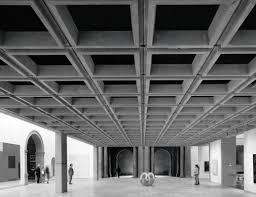

Waffle Slab
 This type of slab has a length and width of more than 4 meters of length and width. In a two-way slab, distribution bars are installed at both ends to prevent the buildup of strains. These slabs are utilized in the construction of multi-story buildings floors.
Uses of Waffle Slab
A waffle slab is a slab with holes underneath that resembles waffles. When vast spans are necessary (e.g., auditoriums, cinema halls), it is typically employed to eliminate many columns interfering with space. As a result, thick slabs spanning between wide beams are required (to avoid the beams intruding below for aesthetic reasons). The main reason for using this technique is its great foundation crack and sagging resistance. In comparison to normal concrete slabs, waffle slabs can hold more weight.Advantages of Waffle Slab
Waffle slabs are capable of carrying heavy loads.Suitable for spans ranging from 7 to 16 meters, greater spans are also achievable with post-tensioning.
These systems are light in weight, resulting in significant cost savings within the framework due to the need for a light framework.
Waffle slabs are frequently used as ceiling and floor slabs.
Disadvantages of Waffle Slab
In traditional construction projects, a waffle slab was not used.It’s pricey; thus, it’s only cost-effective for large-scale production of comparable units.
Construction necessitates a high level of supervision and trained labor.